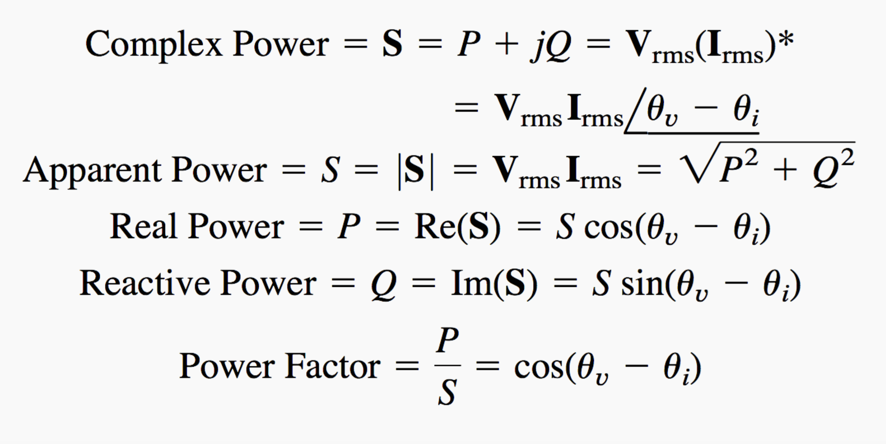

class: center, middle # EE-361 ELECTROMECHANICAL ENERGY CONVERSION ## Ozan Keysan [http://keysan.me](http://keysan.me) Office: C-113 <span class="meta">•</span> Tel: 210 7586 --- # Why do we need AC? <img src="https://www.thetechoutlook.com/wp-content/uploads/2021/03/Elon-Musk-tweets-about-it-would-be-better-if-Nikola-tesla-and-Thomas-Edison-were-together.jpg" alt="Drawing" style="width: 700px;"/> ## [War of Currents](http://en.wikipedia.org/wiki/War_of_Currents) --- # Alternating-Current Grid ## - Transformers can be used to step-up voltage ## - Thinner/Cheaper transmission cables ## - Energy can be transferred to long distances ## - More Efficient (Including the extra power loss of the transformer) --- # Why do we need AC? <img src="https://www.azquotes.com/picture-quotes/quote-if-you-want-to-find-the-secrets-of-the-universe-think-in-terms-of-energy-frequency-and-nikola-tesla-43-76-81.jpg" alt="Drawing" style="width: 800px;"/> --- # Not only in Power Engineering ## Sinusoids exists in: ### - Nature: Waves, Motion... ### - Mechanical Engineering: Vibration, [Natural frequency](http://www.youtube.com/watch?v=j-zczJXSxnw) ### - Computer Science: File Compression, Image Processing, [Fourier Transform](http://jackschaedler.github.io/circles-sines-signals/dft_introduction.html) ([mp3](http://nautil.us/blog/the-math-trick-behind-mp3s-jpegs-and-homer-simpsons-face), [jpeg](http://david.li/filtering/)) --- # Sinusoid ## Sinusoid: Signal that has the form of the sine or cosine function. ## \\( V(t) = V\_{max} sin (\omega t) \\) #### or ## \\( V(t) = V\_{max} cos (\omega t) \\) --- # \\( V(t) = V\_{max} sin (\omega t) \\) ## \\( V\_{max}\\) : Amplitude ## \\( \omega\\) : Angular velocity (radians/second) ## \\( t \\) : Time (seconds) -- ## \\(f\\): Frequency in Hertz (Hz) ## \\(\omega = 2 \pi f\\): Frequency radians/s --- # Phase Difference: \\( V(t) = V\_{max} sin (\omega t + \phi) \\) -- ## \\(\phi\\): Phase (radians) <img src="https://raw.githubusercontent.com/ozank/ee281/master/images/phase_difference.png" alt="Drawing" style="width: 500px;"/> ## \\(\phi > 0\\): the signal leads (reaches its peak earlier) --- # Can you answer the following? -- ## \\( cos (\omega t - \pi)\\) = -- \\( - cos (\omega t) \\) -- ## \\( cos (\omega t - \pi /2)\\) = -- \\( sin (\omega t) \\) -- ## \\( sin (\omega t + \pi /2)\\) = -- \\( cos (\omega t) \\) --- # Phase Difference <img src="https://raw.githubusercontent.com/ozank/ee281/master/images/phase_rotate_a.png" alt="Drawing" style="width: 350px;"/><img src="https://raw.githubusercontent.com/ozank/ee281/master/images/phase_rotate_b.png" alt="Drawing" style="width: 350px;"/> --- # What about sinusoid operations? ## \\(3 cos (\omega t) + 4 sin (\omega t) = ?\\) -- ## \\(A cos (\omega t) + B sin (\omega t + \phi) = ?\\) ### [Graphical representation](https://www.desmos.com/calculator/yjdj9jyqpc) --- # Where does a phasor come from? ## Euler: \\(e^{j\theta} = cos\theta + j\,sin\theta\\) -- ## \\(V\_m cos(\omega t + \phi) = Re\\{ V\_m e^{j\phi} \, e^{j\omega t}\\}\\) -- ## \\(e^{j\omega t}\\): the same rotation for every signal in the circuit, so drop it ## \\(\mathbf{V} = V\_m \angle \phi\\): only the amplitude and phase remain --- #Phasors ## Phasor: a complex number that represents the amplitude and phase of a sinusoid -- ## \\(z = x + j y\\) ###where \\(j = \sqrt{-1}\\) -- ### Amplitude: peak value in circuit theory, RMS value in power engineering (this course) --- # Complex Numbers ### \\(j = \sqrt{-1}\\) or better expressed as: \\(j \times j = -1\\) <img src="http://betterexplained.com/wp-content/uploads/complex/negative_imaginary_table.png" alt="Drawing" style="width: 600px;"/> [Better explained: complex numbers](http://betterexplained.com/articles/a-visual-intuitive-guide-to-imaginary-numbers/) --- #Phasors ## In polar form ### \\(z = x + j y = r \angle \phi\\) -- ### where ## \\(r = \sqrt{x^2 + y^2}\\) ## \\(\phi = tan^{-1}(\dfrac{y}{x})\\) --- #Phasors ## In polar form ##\\(z = x + j y = r \angle \phi\\) ###or ##\\(z = r ( cos (\phi) + j sin (\phi)) \\) --- # Phasors ## Remember phasors are there to make your life EASIER! -- ## Differentiation in phasor domain? -- ## \\(i(t)= sin (\omega t + \phi)\\) -- ## \\(\dfrac{d i(t)}{dt}=?\\) -- ## In Phasor domain: \\(j \omega \\) ( i.e rotation by 90 degrees!) --- #Phasor Circuit Analysis: Inductor # Time Domain: \\(v = L \dfrac{di}{dt}\\) -- # Phasor Domain: \\(\mathrm{V} = j \omega L \mathrm{I}\\) --- #Phasor Circuit Analysis: Inductor <img src="https://raw.githubusercontent.com/ozank/ee281/master/images/phasor_inductor.png" alt="Drawing" style="width: 600px;"/> --- #Phasor Circuit Analysis: Inductor <img src="https://raw.githubusercontent.com/ozank/ee281/master/images/phasor_inductor_VI.png" alt="Drawing" style="width: 600px;"/> ## Inductor current lags inductor voltage 90 degrees --- ## Phasor Circuit Analysis: Capacitor <img src="https://raw.githubusercontent.com/ozank/ee281/master/images/phasor_capacitor.png" alt="Drawing" style="width: 330px;"/> ### Time Domain: \\(i = C \dfrac{dv}{dt}\\) -- ### Phasor Domain: \\( \quad \mathrm{V} = \dfrac{1}{j\omega C} \mathrm{I}\\) --- ## Phasor Circuit Analysis: Capacitor <img src="https://raw.githubusercontent.com/ozank/ee281/master/images/phasor_capacitor_VI.png" alt="Drawing" style="width: 400px;"/> ## Capacitor current leads capacitor voltage 90 degrees --- #Impedance ### Impedance is the equivalent of resistance in phasor domain -- ### \\(Z = \dfrac{V}{I} \quad\quad V = ZI\\) -- ## Resistor: \\(R\\) -- ## Inductor: \\(j \omega L\\) -- ## Capacitor: \\(\dfrac{1}{j \omega C}\\) --- # Impedance ## How do you combine a resistor and inductor? -- ## \\(Z\_{eq}=Z\_1 + Z\_2 \\) -- ## \\(Z\_{eq}= R + j \omega L \\) -- ## \\(Z\_{eq}= R + j X = |Z| \angle \theta \\) --- # What is the magnitude of grid voltage? <img src="https://www.canoncitydailyrecord.com/wp-content/uploads/2022/08/DRC-L-25DRBH9.jpg" alt="Drawing" style="width: 800px;"/> --- # Low-Voltage Grid = 230 Vrms (325 V peak) -- ## \\( V(t) = V\_{rms} \,\sqrt{2} \,cos ( 2 \pi \,f \,t) \\) ## \\( V(t) = 230 \,\sqrt{2} \,cos ( 2 \pi \,50 \,t) \\) <iframe src="https://www.desmos.com/calculator/isy7vz2cu7?embed" width="600" height="300" style="border: 1px solid #ccc" frameborder=0></iframe> --- # What is RMS? -- <img src="https://www.matsusada.com/support/terms/ps/rms-960w.png" alt="Drawing" style="width: 800px;"/> --- # What is RMS? # RMS = \\( \sqrt{\dfrac{1}{T}\int_0^T (f(t))^2 dt}\\) -- ## In Plain English: ## The RMS value of an AC signal is equal to the value of direct current (DC) which would have the same power dissipation as the AC. --- # RMS of a Sinusoid ## \\(V\_{rms} = \sqrt{\dfrac{1}{T}\int\_0^T V\_m^2 cos^2(\omega t)\, dt}\\) -- ## \\(\quad\quad = \sqrt{\dfrac{V\_m^2}{2}} = \dfrac{V\_m}{\sqrt{2}}\\) -- ## 230 V\\(\_{rms}\\) → 325 V peak --- # What is RMS? ## What is the average power (in Watts) dissipated in a resistor of 1 \\(\Omega\\) while carrying a 1 A(rms) current? -- <iframe src="https://www.desmos.com/calculator/in0czoq74w?embed" width="750" height="350" style="border: 1px solid #ccc" frameborder=0></iframe> [Edit Graph](https://www.desmos.com/calculator/in0czoq74w) --- # In Power Engineering RMS values are almost always used instead of peak values ! # We also use RMS values in phasor diagrams ! ## \\(P = V I cos\theta\\) with RMS values: no ½ factor --- # Peak or RMS phasors? <table style="width:100%; font-size:25px; border-collapse:collapse; margin-top:10px; line-height:1.35"> <tr style="border-bottom:2px solid #333"><th style="width:24%"></th><th>Circuit theory</th><th>Power engineering (EE361)</th></tr> <tr style="border-bottom:1px solid #ccc"><td><b>Phasor magnitude</b></td><td>Peak: V\\(\_{m} \\) </td> <td>RMS: V\\(\_{rms}\\) = V\\(\_{m} / \sqrt{2}\\)</td></tr> <tr style="border-bottom:1px solid #ccc"><td><b>Average power</b></td><td>\\(P = \dfrac{1}{2} V\_{m} I\_{m} cos\theta \quad \\)</td><td>\\(\quad P = V I cos\theta\\)</td></tr> </table> -- ### ### Same circuit, same angles: only the scale changes by \\(\sqrt{2}\\) ### In this course every V, I and phasor is RMS unless stated otherwise! --- ## Peak vs RMS <iframe src="interactive/rms_peak_explorer.html?embed" width="800" height="600" style="border:0"></iframe> --- # Common Peak/RMS mistakes -- ### \\(P = V\_{peak}^2 / R\\) → 2× too high -- ### Mixing a peak voltage with an RMS current → \\(\sqrt{2}\\) error -- ### Using \\(\sqrt{2}\\) for non-sinusoidal waveforms (square, triangle, PWM) -- ### Forgetting that multimeters, nameplates and the "230 V" grid are all RMS #### Practice at home (with a short quiz): [keysan.me/presentations/interactive/rms_peak_explorer.html](https://keysan.me/presentations/interactive/rms_peak_explorer.html) --- # Active and Reactive Power -- ### What is the average power (in Watts) dissipated in an inductor with an impedance of \\(j 1 \, \Omega\\) while carrying a 1 A(rms) current? <iframe src="https://www.desmos.com/calculator/wr3iw7kdiv?embed" width="750" height="350" style="border: 1px solid #ccc" frameborder=0></iframe> [Edit Graph](https://www.desmos.com/calculator/wr3iw7kdiv) --- # Active and Reactive Power ### What is the average power (in Watts) dissipated in an inductor with an impedance of \\(j 1 \, \Omega\\) while carrying a 1 A(rms) current? ## Real power only dissipates in resistive components. ## Ideal L and C store energy for a quarter cycle and return it in the next: the average power is zero. Reactive power describes this back-and-forth energy exchange. --- # Active and Reactive Power ## What is \\(V\_{rms} \times I\_{rms} \,\\)? -- ## \\(V\_{rms} \times I\_{rms} \neq P \\) -- ## \\(S = V\_{rms} \times I\_{rms} \\) (in VA), Apparent Power -- ## Active Power (P) in Watts equal to ## \\(P= V\_{rms} I\_{rms} cos(\theta) \\) (in W) -- ## \\(cos(\theta)\\): Power factor --- # Unity Power Factor ## In resistive circuits (or in compensated circuits) ## Usually the desired case for electric grid. <img src="https://cdn1.byjus.com/wp-content/uploads/2021/02/unity-power-factor.png" alt="Drawing" style="width: 800px;"/> --- # Lagging Power Factor ## In inductive (RL) circuits <img src="https://cdn1.byjus.com/wp-content/uploads/2021/02/lagging-power-factor.png" alt="Drawing" style="width: 800px;"/> --- # Leading Power Factor ## In Capacitive (RC) circuits <img src="https://cdn1.byjus.com/wp-content/uploads/2021/02/leading-power-factor.png" alt="Drawing" style="width: 800px;"/> --- ## Explore: Phasors, Waveforms & Power <iframe src="interactive/ac_power_explorer.html?embed" width="790" height="530" style="border:0"></iframe> #### Try it yourself: [keysan.me/presentations/interactive/ac_power_explorer.html](https://keysan.me/presentations/interactive/ac_power_explorer.html) --- # \\(S = \sqrt{P^2 + Q^2}\\) <img src="https://www.electricaltechnology.org/wp-content/uploads/2013/07/Power-Triangle-Active-Reactive-Apparent-and-Complex-power.png" alt="Drawing" style="width: 500px;"/> --- # \\(S = \sqrt{P^2 + Q^2}\\) <img src="https://www.electricaltechnology.org/wp-content/uploads/2013/07/Active-Reactive-Apparent-and-Complex-Power.png" alt="Drawing" style="width: 600px;"/> --- # Complex Power ## \\(S = V\_{rms} I\_{rms}^\* = P + jQ\\) -- ## \\(P = V I cos\theta \quad\\) (W) ## \\(Q = V I sin\theta \quad\\) (var), positive for inductive loads ## \\(|S| = V I = \sqrt{P^2 + Q^2} \quad\\) (VA) --- # Example ### A 230 V (rms), 50 Hz supply feeds a series load: R = 8 Ω, L = 19.1 mH. Find: \\(Z, I, \theta\\), PF, P, Q, S -- ### \\(X\_L = 2\pi 50 \times 0.0191 = 6\,\Omega\\) ### \\(Z = 8 + j6 = 10 \angle 36.9° \,\Omega\\) -- ### \\(I = 230/10 = 23\\) A (rms), lagging by 36.9° -- ### PF = cos(36.9°) = 0.8 lagging -- ### P = \\(I^2R\\) = 4.23 kW, Q = \\(I^2X\\) = 3.17 kvar, S = 5.29 kVA #### Check it on the explorer slide: the RL preset is this load --- # Why do we care about power factor? ## A 10 kW load on a 230 V supply: ## PF = 1.0 → I = 43.5 A, PF = 0.8 → I = 54.3 A -- ### 25% more current → \\(1.25^2\\) = 56% more cable loss (\\(I^2R\\)), plus larger cables and transformers -- ### That's why industrial consumers pay penalties for reactive energy -- ### Solution: a parallel capacitor supplies Q locally. For the previous example, about 191 µF brings PF to 1. --- ## Important AC Power Equations <p></p> #### [EE Portal](https://electrical-engineering-portal.com/complex-power-analysis) --- # Any questions? ## You can download this presentation from: [keysan.me/ee361](http://keysan.me/ee361)